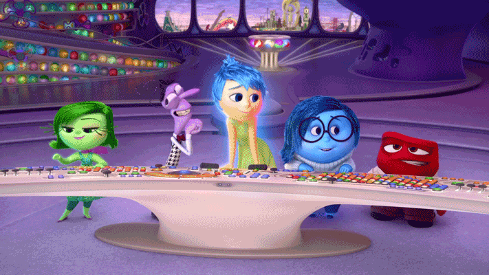

Clase 6: Película Intensamente / 19 de marzo del 2024

Pelicula - Intensamente
Esta clase la programamos para ver la pelicula de disney "Intensamente" acompañado de un refigerio que tuvimos por medio de un compartir, la pelicula es muy buena y tuvimos momentos muy divertidos como el de manuel(nuestro amigo ideal)

Conclusiones sobre la película "Intensamente"
- Las emociones no son ni buenas ni malas pero son importantes
- La importancia de los pensamientos centrales ya que son los que forman nuestra personalidad y son pilares para nuestro
- Tener un buen equilibrio emocional es necesario para evitar lo que le paso a riley
Cine foro
Al finalizar la película, el profesor nos proporcionó una ficha para llenar con preguntas relacionadas con nuestros propios pensamientos como: ¿Cuáles son tus pensamientos centrales? lo cual nos hizo ponernos en la situacion de riley y sacar nuestros propios pensamientos